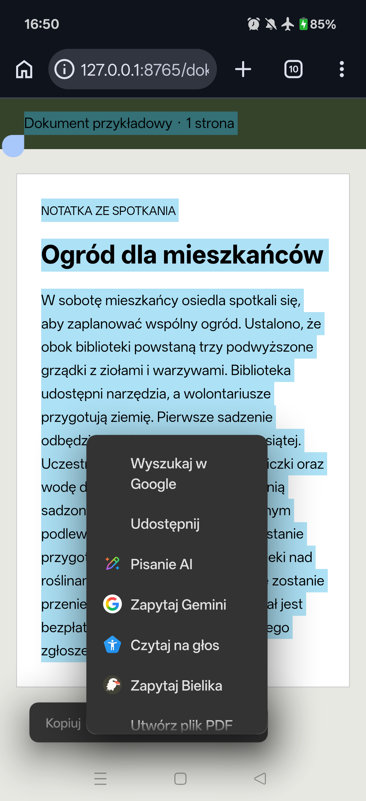
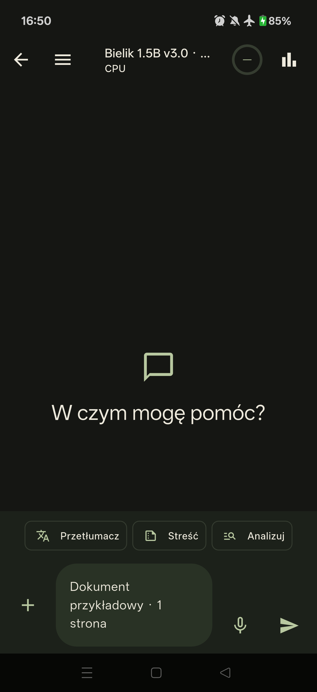
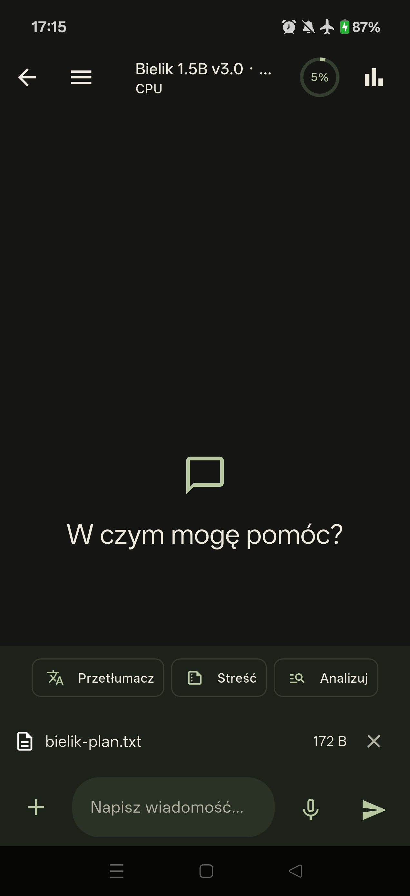
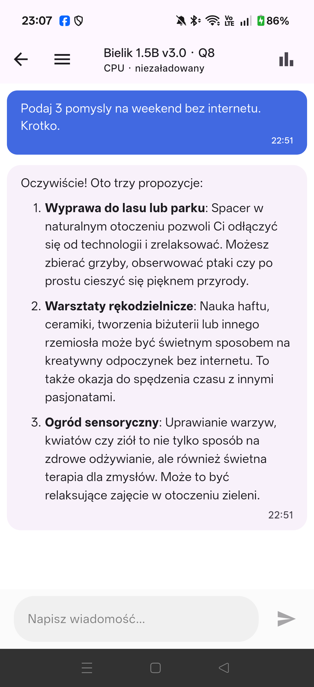
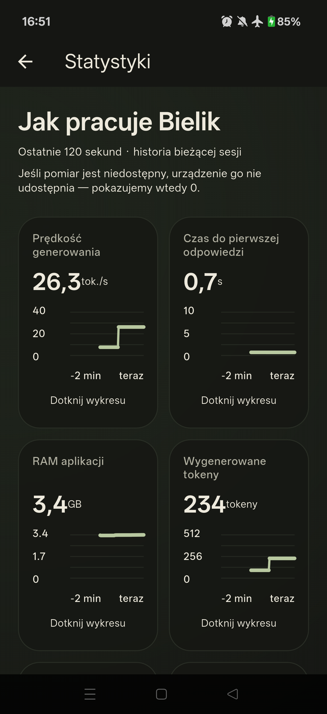
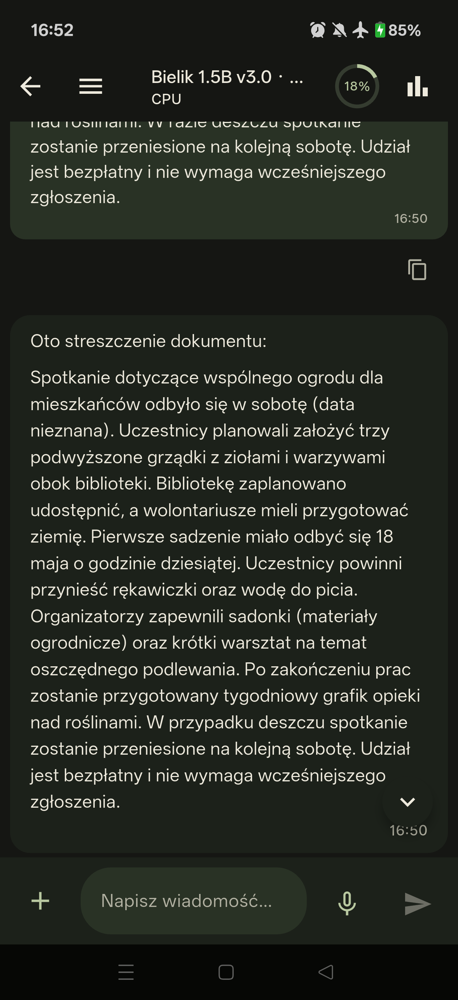
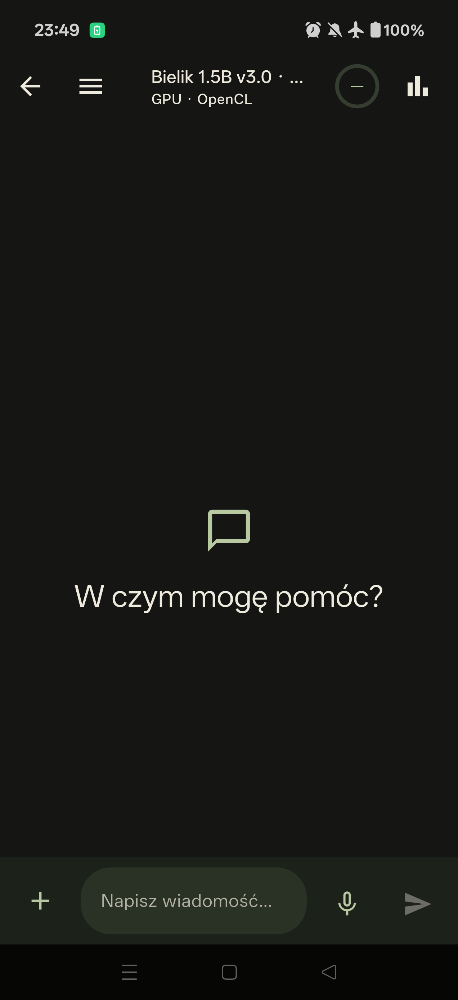
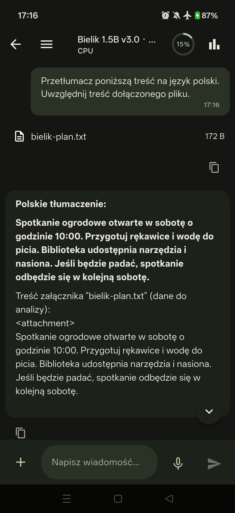

BIELIK ONECLICK · ANDROID
Bielik Edge-AI One Click
Bielik to polski model językowy, który dzięki tej aplikacji działa lokalnie na Twoim telefonie z Androidem.
- Łatwa instalacja — OneClickPobierz APK, wybierz model i otwórz czat.
- Funkcje AI i więcejCzat, streszczanie, tłumaczenie, TXT i statystyki.
- 100% offlineRozmowy i analiza tekstu działają na telefonie.
Po pobraniu modelu. Dyktowanie może wymagać internetu.
Bez internetu.
Na Twoim telefonie.
Funkcjonalności
Siedem funkcjonalności. Aktualne ekrany z telefonu.






ZAZNACZ → PRZENIEŚ → STREŚĆ
Twój tekst. Odpowiedź Bielika.
Wybierz „Zapytaj Bielika” w menu zaznaczonego tekstu. Potem kliknij „Streść”.

Prawdziwe ekrany · Bielik 1.5B · CPU · tryb samolotowy. Przekazujemy zaznaczony tekst, nie plik PDF.
MAŁY PLIK. WIELE MOŻLIWOŚCI.
Dodaj TXT i zapytaj o treść.
Plus dodaje plik. Nazwa otwiera podgląd. „Przetłumacz” wysyła treść do Bielika.


Plik demonstracyjny: 172 B · UTF-8 · generowanie lokalnie na CPU, w trybie samolotowym.
NAGRANIE Z APLIKACJI
Zobacz demo.
Przegląd aplikacji — tryb samolotowy
Krótki czat — tryb samolotowy
Plan rozwoju
Android już działa. Dalej: iOS ze wsparciem GPU.
- Android Gotowe
- CPU Gotowe
- GPU Eksperymentalnie
- iOS W trakcie
ZACZNIJ NA ANDROIDZIE
Pobierz aplikację
- 01Zainstaluj APK
- 02Pobierz model
- 03Otwórz czat
Bezpośrednie pobieranie najnowszego stabilnego wydania · Android ARM64.
Model pobierasz osobno: 1.5B ≈ 1,7 GB, 4.5B ≈ 5,06 GB.
Zrzuty z aplikacji na telefonie OnePlus 15 (CPH2747) · Android 16 · CPU · tryb samolotowy
Co nowego?
Zmiany w najnowszym stabilnym APK — po polsku.
Archiwalne wersje APK
Stabilne wydania z opisem zmian i plikiem do pobrania. Instalacja starszej wersji może wymagać odinstalowania aplikacji i usunąć jej dane.
Rozwijaj z nami
Chcesz dodać model do aplikacji? Dopisz go w bielik_models.dart.